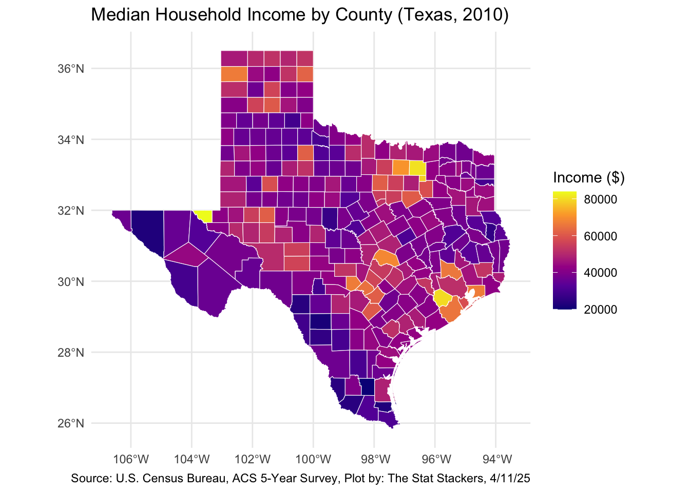
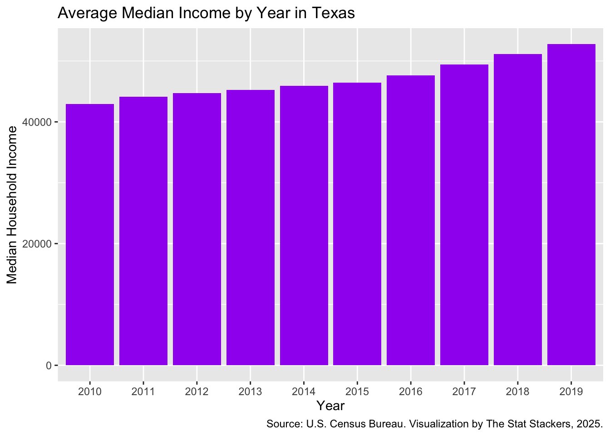
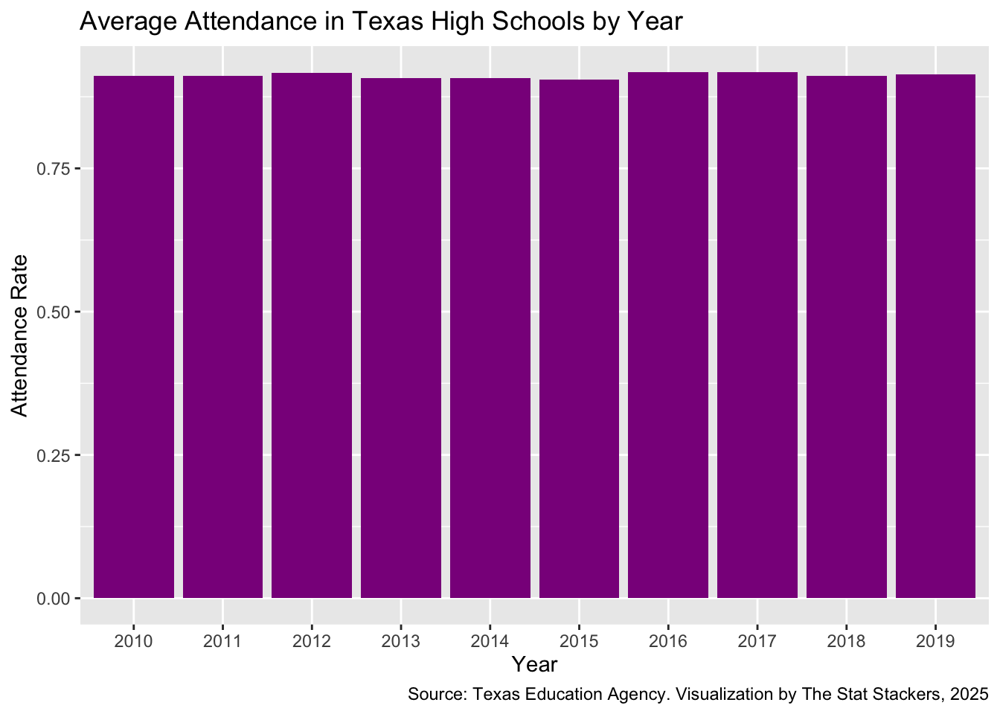
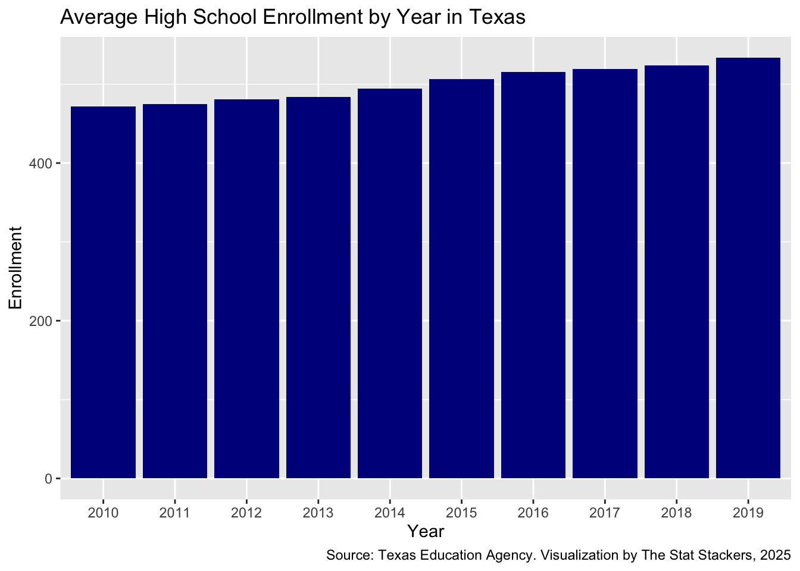
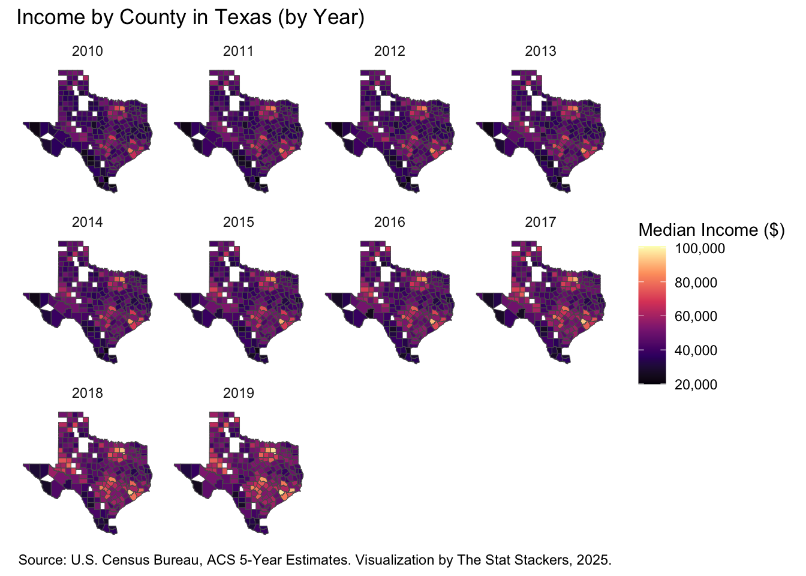
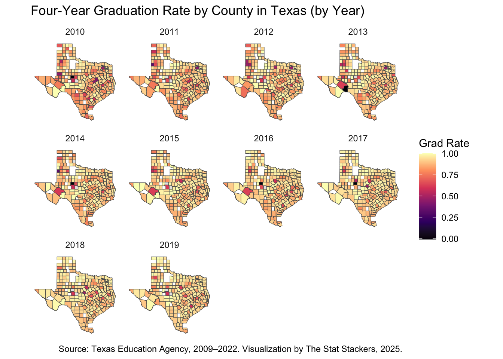

The Correlation between Median Housing Income and Educational Outcomes in Texas
0.1 Project Story
Our group decided to look at the relationship between median housing income across counties in Texas and educational outcomes. As students, we are all interested in how people are impacted in their educational choices and outcomes based on where they live, average economic trends, and other factors that tend to be outside individual control and signifiers of larger racist and classist structures. We wanted our project to showcase some potential trends and links between average household income and educational outcomes because that analysis is related to larger issues across our country. This project is important because understanding where we are and what the current links between education and income is crucial in crafting any type of policy solution to seeks to solve this issue in the future.
Median income information is available through census data and educational data is made public by individual school reporting methods. We got our census data in April of 2025 but are using data from the year range of 2010-2019. We acquired our educational data at the beginning of 2025 and adjusted it in April 2025 to fit this project. Texas Education Agency is what schools in Texas report their data to, which is also where we got educational data from. A Texas shapefile was also used to make our maps. Because we used a shapefile, we needed to align our county names with each data set before we could visualize anything. Additionally, we took out counties that were missing educational data from our ten-year time frame, which is why there are some missing counties on our visualizations.
We retrieved our data from the following sites:
- Texas Education Agency Data
- Texas Enrollment Trends
- Texas Student Data including college readiness data
- Texas Graduation and Dropout Rates
- All census data was found through R in TidyCensus
- How to Obtain Census Data in R
- Texas Shapefile
At the beginning of our project, we included these educational outcomes: graduation rates, college readiness scores, and attendance rates. We crafted the following guiding research questions:
- What is the relationship between median household income and educational outcomes in Texas?
- Across all counties, what is the range of median household income?
- What are the trends in educational outcomes in Texas across the counties?
As we began our initial analysis, somethings became clear. First, our median income data is by county. Urban counties that house cities like Austin, Houston, and Dallas have higher median incomes, but also have larger populations which means they have more schools and a larger student body to draw information from. This also means that educational data from larger urban centers is less volatile than potential outcomes from smaller communities. The same number of students could not graduate at a high school in Dallas as a high school in rural Texas, but that is unlikely to greatly impact the Dallas county data. However, the smaller population will be more impacted by the same number. Additionally, we discovered that the way high schools determined college readiness shifted during out ten year timeline from 2010 to 2019, making the data about college readiness hard to accurately visualize on a map.
Here is a spatial visualization of Texas median income that showcases the trends talked about above.
As you can see in this map, urban centers are easily found by looking for points of yellow. The three main urban centers are more consistently yellow than the more rural areas of the state.
We also made a bar graph that visualizes the general increase in median income across the state.

Here is a bar graph showcasing the steady attendance rate trend talked about above as well.

We also see in the below visualization that the overall enrollment of students increases over our ten year time span.

After these initial discoveries, we still felt that visualizing the greater trends between educational outcomes and median income in counties in Texas could be valuable. We discovered some interesting trends. First, the average median income across Texas increases during our ten year timeline. This aligns with national economic trends in the US. We also noticed that there is a relatively steady attendance rate across the state over the ten years, meaning that nothing significant happened and attendance rates never severely dropped. We also see that as a general trend, areas that have on average higher median incomes don’t necessarily have higher graduation rates. This is likely because of the higher sample size of student populations in the urban centers that both see higher average incomes and lower graduation rates by county. However, the differences across counties are relatively minimal when it comes to graduation rates according to the maps we made. There is also a relationship between test scores and median income. Generally, counties with higher median incomes also have higher average test scores (that indicate college readiness) which is likely due to increased resources in those areas to help students prepare for national testing.
Here is our visualization of income trends over our ten year timeline:

We also made maps visualizing all our educational data. For example, see below a map showcasing graduation rates across Texas over a ten year span. To see more visualizations like this, please go to our Final Visualizations page.

We also want to note that we had to remove counties in our visualizations that didn’t report educational data for each year that we looked at. That is why there are gaps in the map visualizations. Additionally, educational outcomes have selection bias, so while these are trends we noticed, this data does not determine educational success across the state of Texas at all. Our data also doesn’t account for impacts to education like COVID-19 which surely had a great impact on the educational outcomes for students across the state, nationally, and globally.
There is of course, room for improvement. If we had more time, it would be interesting to see if we could compare smaller spatial data. Median income per county is much broader than educational data, which comes on a campus by campus scale. As such, there is much variation within some counties around types of schools and related income data. Someone could take what we’ve started and make it more comprehensive, while looking on a more micro level at the correlation between income levels and student success at individual schools instead of general county trends. Additionally, moving to look at more than just the state of Texas could also be interesting. Showing maps that categorize the types of school in different locations could also be interesting. How does public, private, charter, magnet and the various types of schools that exist impact student success? And who goes to these differing schools? Our project is much broader which means it is harder to come to concrete conclusions aside from basic correlation.